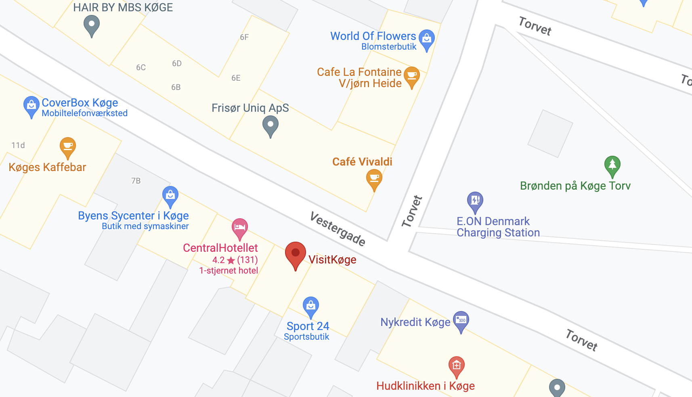

Skattejagt - Lige for de små
En sjov og lærerig skattejagt for de små størrelser, der byder på gåder som skal løses ved at gå rundt i Køge by og finde ledetråde. For at deltage i denne skattejagt, kan man gå til vores forretning ved Køge Torv. Derinde skal man spørge efter skattekortet. Og SÅ kan skattejagten gå igang
